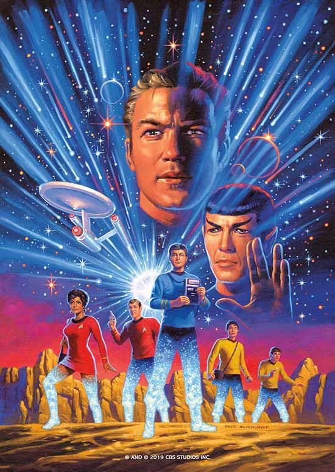

 Star Trek 1 (à l'origine nommée sous son titre français, Patrouille du cosmos1) est un univers de science-fiction, créé par Gene Roddenberry en 1966, qui regroupe sept séries télévisées qui comptabilisent 788 épisodes(soit plus de cinq cent quarante heures de programme), treize longs métrages 3, des centaines de romans, de bandes dessinées et des dizaines de jeux vidéo, ainsi qu'une fanfiction importante. Entre 2006 et 2019, la franchise de télévision était la propriété exclusive de la compagnie CBS, tandis que la franchise cinématographique était la propriété de la Viacom, maison-mère de Paramount Pictures. Depuis la fusion de ViacomCBS en 2019, la franchise Star Trek est de nouveau réunie au sein d'une même entité2.
Dans l'univers Star Trek, l'humanité développe le voyage spatial à vitesse supraluminique, grâce à un moteur à distorsion, à la suite d'une période post-apocalyptique du milieu du xxie siècle (voir le Jour du Premier Contact). Plus tard, l'homme s'unit à d'autres espèces intelligentes de la galaxie pour former la Fédération des planètes unies. À la suite d'une intervention extraterrestre, et grâce à la science, l'humanité surmonte largement ses nombreux vices et faiblesses terrestres, au xxiiie siècle. Les histoires de Star Trek dépeignent souvent les aventures d'êtres humains et d'espèces extra-terrestres qui servent dans Starfleet, ainsi que les nombreux contacts de ceux-ci avec d'autres civilisations.
Les protagonistes, dont les idéaux sont parfois imparfaitement appliqués aux dilemmes présentés dans la série, sont essentiellement altruistes. Nombre de conflits et de dimensions politiques de Star Trek constituent des allégories de réalités culturelles contemporaines ; la série télévisée originale de Star Trek aborde les questions des années 1960, tout comme les séries dérivées ultérieures ont reflété des questions de leurs époques respectives. Les problèmes soulevés dans les différentes séries sont : la guerre et la paix, l'autoritarisme, l'impérialisme classique, la lutte des classes, l'eugénisme, la géopolitique, le racisme, les droits de l'homme, le sexisme, le féminisme et le rôle de la technologie3.
“Logic is the beginning of wisdom, not the end.”